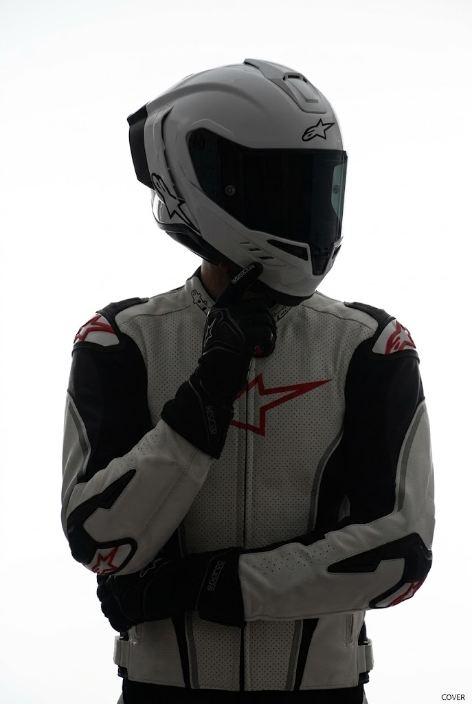

出生於新竹，父母皆是工程師，從小就在科技氛圍中成長。 家中接觸大量資訊產品，也常接近竹科工作環境，這讓我對科技的便利與力量深感著迷。 這份熱情不只是好奇，而是一種想成為像父母一樣，投入科技產業、解決問題、創造價值的動力。
科技為熱情
實作為證明
來自新竹的我，從小在科技家庭的熏陶下，培養出對資訊與工程的濃厚興趣。 透過高中與大學的學習、競賽與實務經驗，我不斷探索自己在資訊領域中的可能性， 並逐步朝向更扎實的工程實力與研究未來邁進。
- 2004 出生時間
- 2 個系所學習
- 10+ 項競賽與實務

ABOUT
我的故事，從科技家庭開始
Core values
- 熱愛科技與實作
- 重視團隊與協作
- 對數據與系統有強烈好奇心
- 始終願意持續精進自己
EDUCATION
學習歷程與學術背景
新竹市私立磐石高中
- MOCC 電腦專業級證照
- 電子知識力創客能力證書
- 111年度普通高級中學數理及資訊科學能力競賽（複賽）
銘傳大學
- 資訊管理學系
- 資訊工程學系（輔）
- 專題研究：心靈時光膠囊（組長）
- 架設購物網站
社團
- 資訊服務社 隊長
- 新生盃籃球賽 第4名
- 新生盃合唱 第5名
- 銘傳拉拉 第1名
多元學習與實務經驗
- 中研院：大數據與密碼演算法（備取）
- Google 數位人才探索計畫-AI職場通識學程
- 2025旋風盃企業資源管理全國競賽（第二名）
- 協助台南仁愛國小架設資訊系統
EXPERIENCE
經歷與成就
2027
專題研究與實務落地
擔任「心靈時光膠囊」專題研究組長，從需求規劃到執行與呈現，鍛鍊系統設計與團隊協作能力。
2026
AI 與數位人才探索計畫
參與 Google 數位人才探索計畫-AI 職場通識學程，擴展與 AI 與數位職場相關的知識與視野。
2025
中研院大數據與密碼演算法
參與中研院大數據與密碼演算法相關學習，深入了解資料安全與演算法應用基礎。
2024
旋風盃企業資源管理全國競賽
榮獲全國第二名，展現對企業流程與管理系統的理解能力與競賽實力。
WORKS
作品與實作成果
心靈時光膠囊
專題研究系統，聚焦於記憶與情感表達的數位敘事與互動設計。
購物網站建置
從需求、介面與功能設計出發，完成一個具體的電商系統雛形。
校務與資訊系統支援
協助台南仁愛國小架設資訊系統，將技術實際應用於教育場域。
競賽與模擬實戰
透過企業資源管理全國競賽與各項數理資訊競賽，累積分析與決策能力。
FUTURE
未來的方向與期許
經過兩年的大學學習，我更清楚認識到自己的不足與成長空間。 也因此我希望藉由實習與更多實務機會，進一步學習專業知識，接觸更成熟的工程流程， 強化未來進入社會時的競爭力與適應力。
我期許自己不僅能夠在資訊領域扎根，更能持續改善邏輯思維、技術實力與解決問題的能力， 成為一名能夠在科技產業中持續創造價值的人。